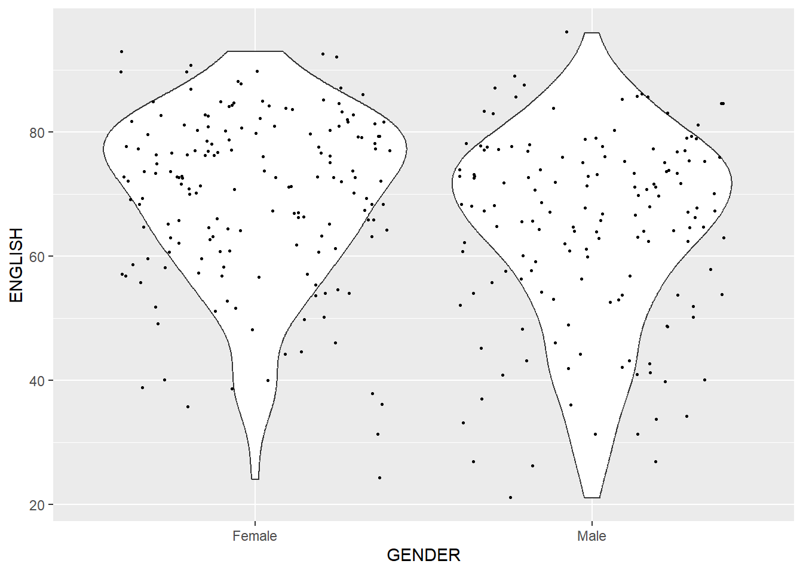
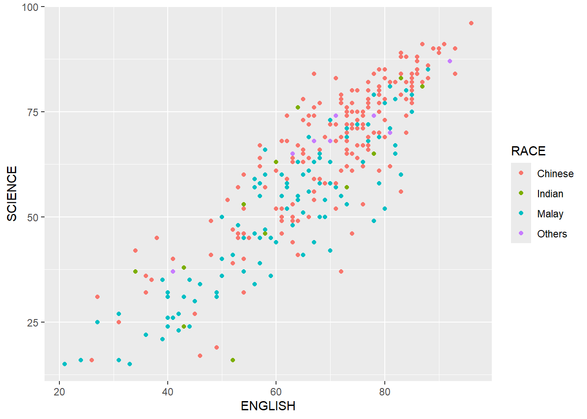

pacman::p_load(tidyverse)Hands-on Exercise 1
A Layered Grammar of Graphics: ggplot2 methods
1 Learning Outcome
This exercise introduces the basic principles and essential components of ggplot2 package, which is based on the Layered Grammar of Graphics. Here, we present some ways that this package can be used to plot a variation of elegant and functional statistical graphics.
2 Getting started
2.1 Loading libraries
The required R package for this exercise is tidyverse.
2.2 Importing data
The data used is the year end examination grades of a cohort of primary 3 students from a local school.
exam_data <- read_csv("data/Exam_data.csv")A brief exploration of the data shows that:
Using
dim, we see that the data has 322 rows (entries) and 7 columns (attributes).Using
str, we see which attributes are categorical (of classchr) and which are continuous (of classnum).
dim(exam_data)[1] 322 7str(exam_data)spc_tbl_ [322 × 7] (S3: spec_tbl_df/tbl_df/tbl/data.frame)
$ ID : chr [1:322] "Student321" "Student305" "Student289" "Student227" ...
$ CLASS : chr [1:322] "3I" "3I" "3H" "3F" ...
$ GENDER : chr [1:322] "Male" "Female" "Male" "Male" ...
$ RACE : chr [1:322] "Malay" "Malay" "Chinese" "Chinese" ...
$ ENGLISH: num [1:322] 21 24 26 27 27 31 31 31 33 34 ...
$ MATHS : num [1:322] 9 22 16 77 11 16 21 18 19 49 ...
$ SCIENCE: num [1:322] 15 16 16 31 25 16 25 27 15 37 ...
- attr(*, "spec")=
.. cols(
.. ID = col_character(),
.. CLASS = col_character(),
.. GENDER = col_character(),
.. RACE = col_character(),
.. ENGLISH = col_double(),
.. MATHS = col_double(),
.. SCIENCE = col_double()
.. )
- attr(*, "problems")=<externalptr> 3 Introducing ggplot
This package is part of the tidyverse family, specifically used for visual exploration.
For more detail, visit ggplot2 link.
Below, we present a quick comparison between a boxplot plotted with R Graphics and with ggplot. Charts customized by referring to https://r-charts.com/.
boxplot(exam_data$ENGLISH,
main = "Distribution of English scores",
xlab = "ENGLISH",
ylab = "Score",
col = "#30638E")ggplot(exam_data, aes(x="", y = ENGLISH)) +
stat_boxplot(geom = "errorbar",
width = 0.15) +
geom_boxplot(fill="#30638E",
color = "black") +
ggtitle("Distribution of English scores") +
theme(panel.background = element_rect(fill = "grey")) +
labs(x = "ENGLISH", y = "Score") 4 Grammar of Graphics
ggplot is an implementation of Leland Wilkinson’s Grammar of Graphics.
There are two principles in Grammar of Graphics:
- Graphics = distinct layers of grammatical elements
- Meaningful plots through aesthetic mapping
The table below describes the seven grammars of ggplot2.
| Building Block | Description |
|---|---|
| Data | The dataset being plotted. |
| Aesthetics | Map data attributes to visual properties like position, color, size, shape, and transparency |
| Geometric | Visual elements such as point / bar / line |
| Facets | Divide data into subsets for parallel displays of graphs (also known as paneling) |
| Statistics | Statistical summaries such as averages or confidence intervals |
| Coordinate Systems | Plane of data mapped on the graphic |
| Themes | Customize non-data plot elements like titles, axis labels, and legend aesthetics |
5 Essential Grammatical Elements in ggplot2
In this section, we explore all of the grammatical elements.
5.1 Data and Aesthetics
Learning points:
ggplot()initializes a ggplot object.- The data argument defines the dataset to be used for plotting.
- The
aes()function is used to specify all aesthetics of the plot- The aesthetic mappings take attributes of the data and and use them to influence visual characteristics, such as position, colour, size, shape, or transparency. Each visual characteristic can thus encode an aspect of the data and be used to convey information.
ggplot(data=exam_data, aes(x="ENGLISH"))5.1.1 Defining aes in ggplot() or in geom objects
While we can define aes within ggplot()() function, each geom layer can also have its own aes specification.
In this code chunk, we plot two layers geom_smooth() and geom_point.The aesthetics are defined globally in the ggplot() function. The geom_point() layer will inherit these aesthetics automatically.
# ggplot(data=exam_data, aes(x = ENGLISH, y = SCIENCE)) +
# geom_point() +
# geom_smooth()
ggplot(data=exam_data, aes(x = ENGLISH, y = SCIENCE)) +
geom_smooth() +
geom_point()In this code chunk, the aesthetics are defined within geom_smooth(). The geom_point() layer will not inherit these aesthetics and will need them specified separately.
ggplot(data=exam_data) +
geom_smooth(aes(x = ENGLISH, y = SCIENCE),
method = "lm") +
geom_point(aes(x = ENGLISH, y = SCIENCE, colour = RACE))5.2 Geometric Objects
Learning points:
- Geometric objects are the actual marks we put on a plot.
- A plot must have at least one geom. Add a geom using + operator.
The image shows some examples of geometric objects that we can put on a plot.

Other examples include geom_smooth (for drawing smoothed lines), geom_bar (for drawing bars), geom_polygon (for drawing arbitrary shapes), geom_map (for drawing polygons in the shape of a map).
For complete list, please refer to here.
5.2.1 geom_bar()
geom_bar() can be used to plot bar charts.
By default, this function counts the number of occurrences for each level of a categorical variable. The code chunk below demonstrates how the function counts the occurrences of each level (Male/Female) of the categorical variable GENDER.
ggplot(data=exam_data,
aes(x=GENDER)) +
geom_bar()If your data already contains the count for each group, you will need to pass stat = "identity" inside geom_bar. The code chunk below demonstrates this using a different dataframe that already contains the counts of males and females in a cohort.
gender_data <- data.frame(GENDER = c("Male", "Female"), count = c(152, 170))
gender_data GENDER count
1 Male 152
2 Female 170ggplot(gender_data, aes(x = GENDER, y = count)) +
geom_bar(stat = "identity")
5.2.2 geom_dotplot()
geom_dotplot can be used to plot dot plots.
The width of a dot corresponds to the bin width (or maximum width). The dots are stacked, with each dot representing one observation.
However, the y scale can be misleading due to technical limitations of ggplot2.
scale_y_continuous()can be used to turn off the y-axis- binwidth argument can be used to change the binwidth
The dotplot below illustrates the distribution of scores for ENGLISH across the cohort. Each dot represents a student’s score, while the X axis denotes the range of scores achieved.
ggplot(data=exam_data,
aes(x = ENGLISH)) +
geom_dotplot(dotsize = 0.5)Here we remove the misleading y-axis and change the binwidth to 2.5.
ggplot(data=exam_data,
aes(x = ENGLISH)) +
geom_dotplot(binwidth=2.5,
dotsize = 0.5) +
scale_y_continuous(NULL,
breaks = NULL)5.2.3 geom_histogram()
geom_histogram() creates histograms.
In this section, we also demonstrate how a geometric object can be modified by changing geom() and aes().
We first plot a simple histogram of the ENGLISH scores.
ggplot(data=exam_data,
aes(x = ENGLISH)) +
geom_histogram() 
In this code chunk, we change geom() in the following ways:
- bins argument is used to change the number of bins to 15
- fill argument is used to shade the histogram
- color argument is used to change the outline colour of the bars in black
ggplot(data=exam_data,
aes(x= ENGLISH)) +
geom_histogram(bins=15,
fill="#30638E",
color="black") 
We can also visualize the distribution based on the categories of GENDER. Using aes(), we add the GENDER variable to the fill argument.
ggplot(data=exam_data,
aes(x= ENGLISH,
fill = GENDER)) +
geom_histogram(bins=15,
color ="black")5.2.4 geom_density()
geom-density()computes and plots kernel density estimate. It is an alternative to the histogram, for continuous data that comes from an underlying smooth distribution.
ggplot(data=exam_data,
aes(x = ENGLISH)) +
geom_density() We can change aes() by adding the GENDER variable to the colour argument. The density plot will display different colors for the density lines of male and female students.
ggplot(data=exam_data,
aes(x = ENGLISH,
colour = GENDER)) +
geom_density()5.2.5 geom_boxplot
geom_boxplotdisplays continuous value list. It visualises five summary statistics (the median, two hinges and two whiskers), and all “outlying” points individually.
The code chunk plots a boxplot that compares the distribution of ENGLISH scores across different categories of GENDER.
ggplot(data=exam_data,
aes(y = ENGLISH,
x= GENDER)) +
geom_boxplot() Notches help visually assess whether the medians of distributions differ.
If the notches do not overlap, this is evidence that the medians are different.
ggplot(data=exam_data,
aes(y = ENGLISH,
x= GENDER)) +
geom_boxplot(notch=TRUE)5.2.6 geom_violin
geom_violin is used to create violin plots that compare multiple data distributions side by side.
The code chunk below plots the distribution of ENGLISH score by GENDER in violin plot.
ggplot(data=exam_data,
aes(y = ENGLISH,
x= GENDER)) +
geom_violin()5.2.7 geom_point()
geom_point() is useful in creating scatter plots.
The scatterplot below shows the ENGLISH and SCIENCE scores of the cohort.
ggplot(data=exam_data,
aes(x= ENGLISH,
y=SCIENCE)) +
geom_point() 5.2.8 xgeom objects can be combined
The code chunk below plots the data points on the violin plots by using both geom_violin() and geom_point().
ggplot(data=exam_data,
aes(y = ENGLISH,
x= GENDER)) +
geom_violin() +
geom_point(position="jitter",
size = 0.5) 
5.3 Statistics
Learning points:
- By adding
stat_()functions, we can statistically transform data, usually as some form of summary. This overrides the default geom. - By adding
geom_()functions, we can override the default stat.
The boxplots below are incomplete because the positions of the means were not shown.
ggplot(data=exam_data,
aes(y = ENGLISH, x= GENDER)) +
geom_boxplot()
The code chunk below adds mean values by using stat_summary().
ggplot(data=exam_data,
aes(y = ENGLISH, x= GENDER)) +
geom_boxplot() +
stat_summary(geom = "point",
fun.y="mean",
colour ="red",
size=4) The code chunk below adding mean values by using geom_() function and overriding the default stat.
ggplot(data=exam_data,
aes(y = ENGLISH, x= GENDER)) +
geom_boxplot() +
geom_point(stat="summary",
fun.y="mean",
colour ="red",
size=4) 
5.3.1 Adding a best fit curve on a scatterplot
We can improve the interpretability of a scatterplot graph by adding a best fit curve.
This can be done using geom_smooth().
- The default smoothing method used is loess.
- This can be overridden by adding the method argument. See here for details.
ggplot(data=exam_data,
aes(x= ENGLISH,
y=SCIENCE)) +
geom_point() +
geom_smooth(linewidth=0.5)5.4 Facets
Learning points:
- Faceting creates a series of small, individual plots, with each representing a specific subset of the data. This technique serves as alternative to using aesthetics when visualizing additional discrete variables.
- ggplot2 supports two types of factes, namely:
facet_wrapandfacet_grid().
5.4.1 facet_wrap()
facet_wrap wraps a 1d sequence of panels into 2d. This is generally a better use of screen space than facet_grid because most displays are roughly rectangular.
ggplot(data=exam_data,
aes(x= ENGLISH)) +
geom_histogram(bins=15) +
facet_wrap(~ CLASS)5.4.2 facet_grid()
facet_grid() forms a matrix of panels defined by row and column facetting variables. It is most useful when you have two discrete variables, and all combinations of the variables exist in the data.
ggplot(data=exam_data,
aes(x= ENGLISH)) +
geom_histogram(bins=15) +
facet_grid(~ CLASS)5.5 Coordinates
The Coordinates functions map the position of objects onto the plane of the plot.
There are a number of different possible coordinate systems to use, they are:
coord_cartesian(): the default cartesian coordinate systems, where you specify x and y values (e.g. allows you to zoom in or out).coord_flip(): a cartesian system with the x and y flipped.coord_fixed(): a cartesian system with a “fixed” aspect ratio (e.g. 1.78 for a “widescreen” plot).coord_quickmap(): a coordinate system that approximates a good aspect ratio for maps.
5.5.1 coord_flip()
By the default, the bar chart of ggplot2 is in vertical form.
ggplot(data=exam_data,
aes(x=RACE)) +
geom_bar()
We can flip the horizontal bar chart into vertical bar chart by using coord_flip().
ggplot(data=exam_data,
aes(x=RACE)) +
geom_bar() +
coord_flip()
5.5.2 coord_cartesian()
The scatterplot below is slightly misleading because the y-axis and x-axis ranges are not equal.
ggplot(data=exam_data,
aes(x= ENGLISH, y=SCIENCE)) +
geom_point() +
geom_smooth(method=lm, linewidth=0.5)We can use coord_cartesian() to fix the range of both the y-axis and x-axis, to range from 0-100.
ggplot(data=exam_data,
aes(x= ENGLISH, y=SCIENCE)) +
geom_point() +
geom_smooth(method=lm,
linewidth=0.5) +
coord_cartesian(xlim=c(0,100),
ylim=c(0,100))5.6 Themes
Learning Points:
- Themes control elements of the graph not related to the data. For example:
- background colour
- size of fonts
- gridlines
- colour of labels
- Each theme element can be conceived of as either a line (e.g. x-axis), a rectangle (e.g. graph background), or text (e.g. axis title).
Refer to this link for a list of themes.
This is also the default theme.
ggplot(data=exam_data) +
geom_point(aes(x = ENGLISH, y = SCIENCE, colour = RACE)) +
theme_gray()
ggplot(data=exam_data,
aes(x = ENGLISH, y = SCIENCE, colour = RACE)) +
geom_point() +
theme_bw()ggplot(data=exam_data,
aes(x = ENGLISH, y = SCIENCE, colour = RACE)) +
geom_point() +
theme_void()